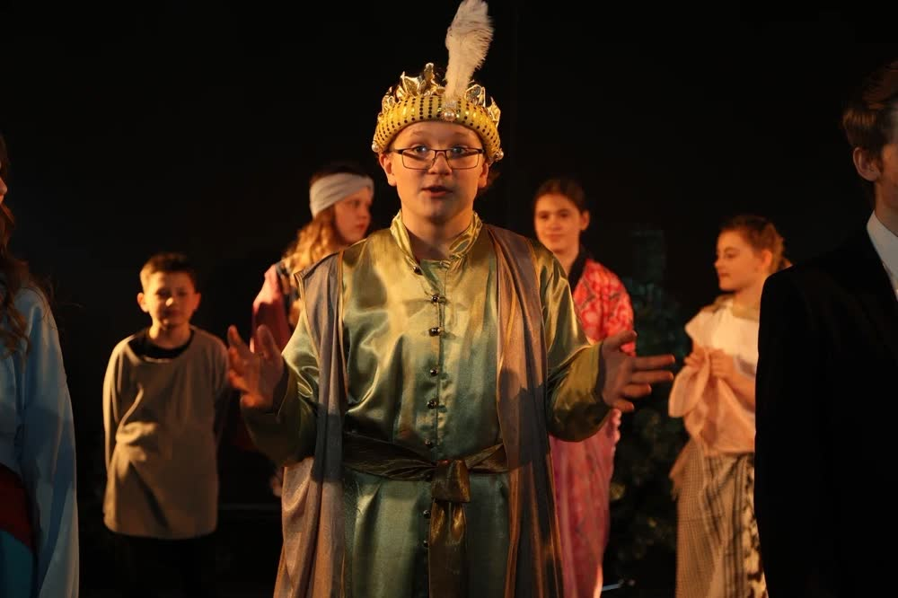

Дети · 5–11 лет

Дети 5 - 11 лет
Игра, которая превращает стеснение в суперсилу
Развиваем эмоциональный интеллект, учим говорить — громко и внятно, общаться легко и дружить с удовольствием. Страх сцены уберём. Не сразу, но уберём.
- Актёрское мастерство. Внимание, память, воображение, команда. Учим не бояться зрителя.
- Сценическая речь. Дикция, голос, интонации. Чтобы слушали с интересом.
- Итог. Отчётный спектакль — с декорациями, костюмами и аплодисментами.